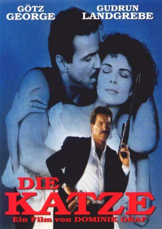
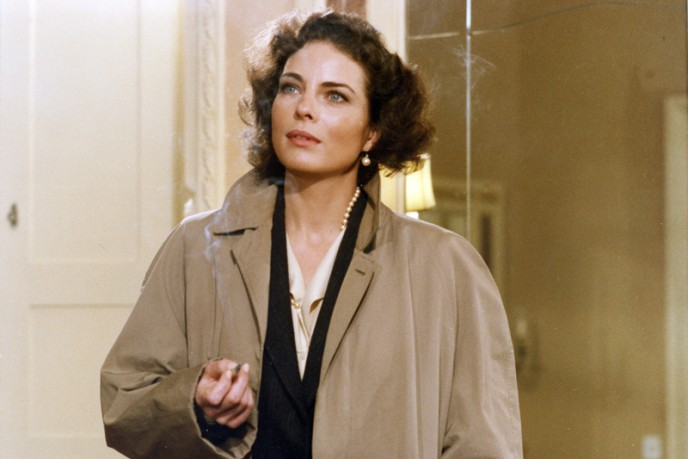

#6116 Die Katze
 
 IMDB-Wertung: 7.1 / 10
IMDB-Wertung: 7.1 / 10  Metascore: 0
Metascore: 0 
Probek ist kein Kleingauner, sondern plant seine Verbrechen eiskalt und im ganz großen Stil. So ist es auch kein Zufall, als er ein Verhältnis mit der verheirateten Jutta Ehser beginnt. Ihr Mann ist nämlich Filialleiter einer Düsseldorfer Sparkasse - und auf ihn und seine Bank hat Probek es abgesehen. Er engagiert Junghein und Britz um einen Banküberfall zu beginnen.
Jahr: 1988
Dauer: 112 Minuten
FSK: 12
Land: West-Deutschland Studio: Neue Constantin FilmTonspuren:
Untertitel:
Auflösung: 1080p (1920x1040) Größe: 7833 MB
Genre: Thriller, Krimi
Regisseur: Dominik Graf
Drehbuch: Sean Brosnan
Soundtrack:
Darsteller:
 Götz George als Probek
Götz George als Probek-  Gudrun Landgrebe als Jutta Ehser
- Heinz Hoenig als Junghein
- Ulrich Gebauer als Filialleiter Ehser
- Joachim Kemmer als Einsatzleiter Voss
 Ralf Richter als Britz
Ralf Richter als Britz- Sabine Kaack als Irma
- Iris Disse als Gudrun
- Erich Will als Feldhaus
 Heinrich Schafmeister als Otten
Heinrich Schafmeister als Otten- Uli Krohm als Kramer
- Claus-Dieter Reents als Hauptkommissar Rücker
- Bernd Hoffmann als Mattusch
- Walter Gontermann als Kern
- Josef Millo als Waiter
- Gabriele Ausböck als Bank Clerk
- Helmut Holzer als Bank Clerk
- Klaus Maas als Klaus
Datei: X:\1988\Katze, Die (1988, FSK12, 1920x1040).mkv seit 03.05.2017
Festplatte: HD 1987-1991
 Es gibt insgesamt 66 Filme in der Gruppe '1988'
Es gibt insgesamt 66 Filme in der Gruppe '1988'